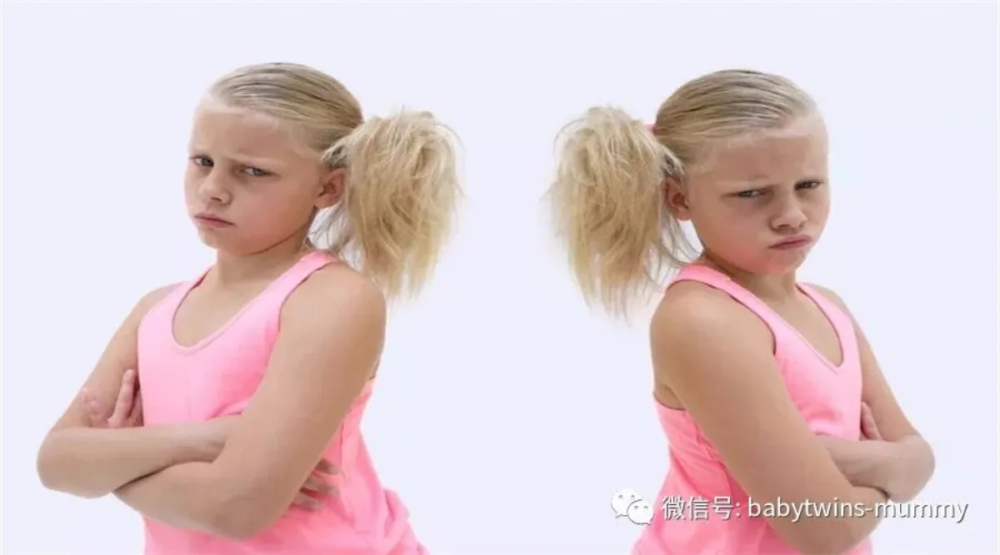
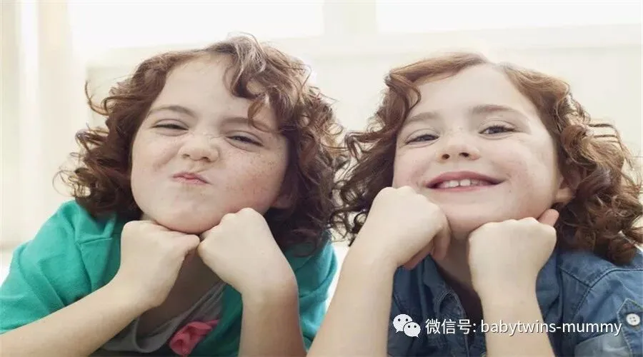

戳上面的蓝字关注我们哦！
文|圆圈妈 图片|来自网络
1
如果我打你了，你的双胞胎哥姐弟妹会感觉到吗？
当一个双胞胎受到外界刺激时，
另一个双胞胎会对这种感觉产生物理反应。
虽然双胞胎确实拥有强大的联系，
但这不完全是一种形而上学现象。
有一对双胞胎姐妹的例子。
她的妹妹正在生孩子，她自己也会感到腹部疼痛。
但是，大多数双胞胎从未遇到过这种情况。
圆圈哥俩确实有出现过这种情况，
但只存在于集体发烧，集体咳嗽，集体拉肚子等生病事件。
其他时候都是截然相反的，
一个在大哭，另一个在贼贼的笑，
一个在大口吃饭，另一个把饭抿在嘴里，半天不吞进去。
一个在呼呼大睡，另一个嗨得没完没了。
2
我喜欢你多一点。
如果不想被抛白眼，
请记住不要在双胞胎孩子面前说这样的话，
我喜欢你的哥哥/姐姐/弟弟/妹妹多一点！
他们不喜欢被别人拿来比较。
尤其是那个被比较的人居然是跟自己长得一模一样的。
我从未在圆圈哥俩面前说过这样的话，
我也不允许家人或者别人做这么无聊的比较。
值得庆幸，我家目前为止没有出现因为比较带来的一系列问题。
我们鼓励圆圈有自己的个性，
并不强求他们按照大人的标准。
不会因为圆圆比较乖，圈圈比较皮。
我们就会区别对待。
双胞胎的独特性应该被鼓励，被提倡，被支持！
3
你们谁大谁小啊？
这个问题堪称双胞胎问题重灾区。
我每次带圆圈出去“压马路”
只要有人过来搭讪询问的，都会问到这句话。
有些人真的是闲的没事或者是想象力不够丰富，
总是拿这么幼稚的问题为难我们。
“你们谁大谁小啊？”
这个问题对于有些双胞胎来说，根本就不是问题，
他们根本不关心谁大谁小，甚至一点概念都没有，
从胚芽开始就一起成长，谁知道谁先冒出芽呢？
而且这个问题很重要吗？
我在养育圆圈哥俩的过程，
在称呼上从来没有跟他们明确谁是哥，谁是弟，谁大谁小，
只是相差一分钟而已，实在没有区分的必要。
因此每次有人问起的时候，
哥俩都是我看看你，你看看我，没反应。
如果仅仅根据出生顺序来判断谁大谁小，真对他们不公平！
剖腹产，先抱上面的出来，那是老大。
要是顺产，被压下面先跑出来，那也是老大啊！
所以吃饱撑着没事干分大小。
现在哥俩也是用小名称呼彼此，大家平起平坐！
更何况打起架来根本没有哥啊弟啊这一说法！
拳头才是老大哥！
4
我希望我也有对双胞胎
说这话的人，能不能负点责任呢？
如果可以真希望圆圈一个接一个地来！
但是既然都一起来了，只好硬着头皮上吧！
养育一对双胞胎可不是1+1等于2那么简单。
举个例子：圆圈现处在“可怕的两岁”阶段。
屋子里有圆圈两个孩子，我会感觉到整个屋子都是孩子，
再形象点就是一群乱蹦乱跳，亢奋无比的猴子在屋子里四处撒野！
圆圈外婆说，有圆圈在的地方，她都不敢坐下来歇会，
生怕一个不明物体就这么砸过来了！
5
你们之间有心灵感应吗？
问这种问题的人，真的是影视剧看多了。
虽然双胞胎比普通兄弟姐妹确实是有区别，
而且那种特殊的联系总是被很多人津津乐道甚至越说越悬。
但直到目前为止都没有科学证据表明双胞胎之间有心灵感应。
我还真的希望圆圈哥俩有心灵感应。
圆圆爱哭，不会表达。
要是有心灵感应的话，圈圈可以告诉我圆圆哭泣的原因
圈圈爱打架，稍微不顺心就先打完了再说。
要是有心灵感应的话，我可以求助圆圆，找到圈圈的“软肋”
圆圆爱生闷气，不顺心了就躲一边不说话
要是真有心灵感应，圈圈可以读出他的内心世界，我可以对症下药开导他！
圈圈心眼多，总是指使圆圆干这干那。
要是真有心灵感应，圆圆会那么傻，任凭指挥吗？
综上所述，心灵感应都是浮云，
最终还是靠自己，练就火眼金星，
关键时刻收服这两只小泼猴。
6
你们任何事情都一起做吗？
ε=(´ο｀*)))唉。没经历过真的是天真得可爱！
我真的很希望圆圈什么事情都是一起做的！
那样我得少操多少心，省心多少倍啊！
事实上呢？
双胞胎的差异性大着呢！
他们有自己的身份标志，有各自的兴趣爱好。
很多双胞胎妈妈反馈，
流水线式的喂养和统一的作息管理在双胞胎小的时候，
还是可以成功实现的。
但当他们长大之后，自主意识更强烈的时候，
他们就会根据自己的情况作出不同的选择。
如果还是像小时候那样要求他们一起做同样的事情，
他们会觉得不被尊重，甚至觉得是一种侮辱。
圆圈很少一起做同样的事情，
被我一度怀疑我生的是一对“假双胞胎”
看别人家的双胞胎，一起吃喝拉撒睡，多省心啊！
圆圈哥俩从来不走寻常路线，他们好像商量好似的，
你先哭，我等下给你伴奏哭，不然妈妈忙不过来。
你先睡，我晚点睡，不然妈妈又睡死过去了，没人给我们喝奶奶了
你先拉，我还没有要拉臭臭的欲望。而且妈妈真抠门，只买了一个臭臭盆
你先吃，看下好不好吃，要是不好吃就给我使眼色。我绝食！
*作者简介：圆圈妈，家有孖仔男两枚，立志做一名合格的80后全职妈妈。
微信公众号ID：babytwins-mummy 孖仔帮
个人博客：三个男人（www.sgguy.com）
一个专注双胞胎群体的网站，面向家长，每天分享亲子养育知识。
↓点击下方“阅读原文”查看更多

